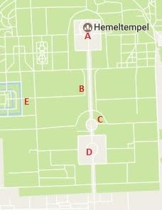

Van de vele tempels die de Chinese hoofdstad rijk is, is de Tempel van de Hemel in het gelijknamige park misschien wel de mooiste en de bekendste. De taoïstische tempel was waar de keizer tweemaal per jaar ging bidden voor een goede oogst voor alle Chinezen in het keizerrijk. Behalve de gebouwen van de tempel zelf is het ook vooral een erg groot park met duizenden eeuwenoude bomen dat dagelijks door vele Chinezen als plaats om muziek te spelen en te dansen gebruikt wordt.
Geschiedenis
Nadat de Ming (1368-1644) de macht in China gegrepen hadden, verplaatsten ze de
hoofdstad van Nanjing, wat Zuidelijke Hoofdstad betekent, naar Beijing, oftewel
Noordelijke Hoofdstad. Dit was omdat de machtsbasis van de Ming in het noorden
van China lag. Echter, voordat Beijing als hoofdstad ingenomen kon worden, vond
de toenmalige Ming-keizer Yongle het nodig Beijing eerst vol imposante bouwwerken
te laten zetten, zodat het een waardige hoofdstad voor de Chinese keizers zou
worden. Een van hun meest bekende bouwwerken is de Verboden Stad, van waaruit
China eeuwenlang geregeerd zou worden. Ook de Tempel van de Hemel, aanvankelijk
gezamenlijk met de Tempel van de Aarde, werd in deze periode gebouwd.
De reden dat de keizer tempels nodig had was dat hij als Zoon van de Hemel werd
beschouwd. De Chinese keizer was de vertegenwoordiger van al het goddelijke op
aarde en door in deze tempels te bidden zouden de keizers contact kunnen leggen
met de goden. De Tempel van de Hemel werd vooral gebruikt om te onderhandelen
over de oogst en over de regen die uiteraard een voorwaarde was om de gewassen
goed te laten groeien. Tijdens deze onderhandelingen gingen de keizer en zijn
entourage drie dagen kamperen in de Tempel van de Hemel, waar de keizer vervolgens
allerlei ceremonies uitvoerde, geen vlees at en koeien verbrandde. Om het allemaal
een beetje serieus te houden mochten de gewone Chinezen bovendien niet zien wat
de keizer verder zoal in de tempel of op het altaar uitvoerde.
Nadat de Tempel van de Hemel aan het begin van de Ming-dynastie gebouwd werd is
het daarna nog enkele malen uitgebreid en opnieuw in de verf gezet. De eerste
maal aan het begin van zestiende eeuw onder keizer Jiajing toen de Hal voor de
Goede Oogst en het Ronde Heuvel Altaar werden aangelegd. De Tempel van de Aarde
die voorheen op hetzelfde terrein had gestaan werd verplaatst naar het noorden
van Beijing. Tevens werden de gebouwen in het noordelijke deel van het park
verbonden met die in het zuidelijke deel door Brug van de Rode Treden. De tweede
keer dat het complex uitgebreid werd was in de achttiende eeuw onder keizer
Qianlong. Onder andere de tuinen werden flink uitgebreid, er werden nieuwe,
hogere en rijker versierde muren gemetseld en ook kreeg het park zijn huidige,
symbolische vormen. Daarnaast werd in deze tijd het Paleis van Onthouding aangelegd.
Zoals zoveel historische gebouwen in Beijing is het ook een keer vernield door
Europese machten, namelijk tijdens de Tweede Opiumoorlog in 1860. Veertig jaar
later, tijdens de Boksersopstand waarin vergeefs werd gepoogd de buitenlandse
troepen het land uit te drijven, vonden de Westerse machten de Tempel van de
Hemel een geschikte locatie voor hun militaire hoofdkwartier. Toen nog weer iets
later het keizerrijk gevallen was dacht Yuan Shikai, een opstandige Chinese
generaal die getrouwd was met tien vrouwen, dat hij de nieuwe keizer kon worden
en ging dus ook de tempel in om hierover, tevergeefs, met de goden te praten.
In 1918 vonden de Chinezen het welletjes geweest en werd de Tempel van de Hemel
omgedoopt tot een openbaar park, wat overigens leidde tot een grote stroom aan
nieuwsgierige Chinezen die daarvoor nooit hadden mogen zien wat de keizer zoal
in het park uitgevoerd had. Gedurende de twintigste eeuw zijn het park en de
tempels flink opgeknapt en tegenwoordig is het een van de belangrijkste toeristische
trekpleisters van Beijing.
Gebouwen
Ook bij deze attractie is er meer te zien dan je denkt, net zoals bij het Plein
van de Hemelse Vrede en de Verboden Stad.Er zijn namelijk verschillende dingen te
zien, om precies te zijn 5 dingen.

| A Gebedshal voor de Goede Oogst |
|---|
| B Brug van de Rode Treden |
| C Keizerlijk Gewelf van de Hemel |
| D Ronde Heuvel Altaar |
| E Paleis van Onthouding |